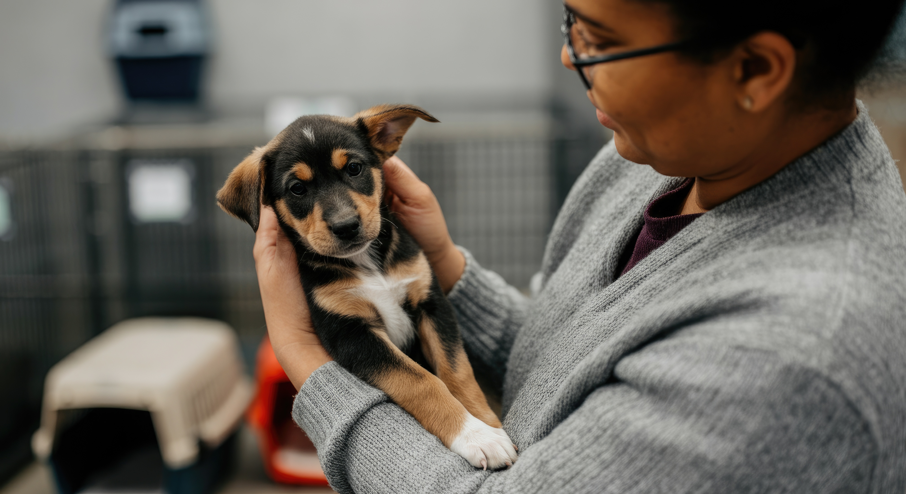
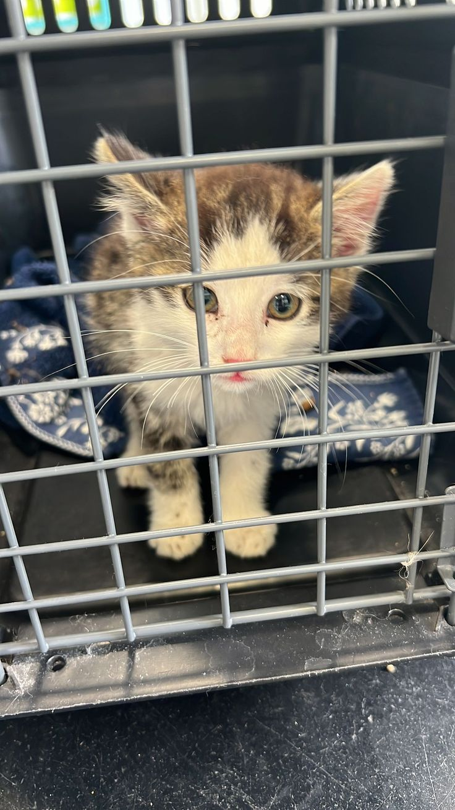

PawsNelspruit
Mpumalanga Animal Rescue for needy pets
Hundreds of loving animals are waiting for a family in Mpumalanga. Browse our rescued dogs, cats, and small animals. Take the first step toward adoption today.
Animals waiting for their forever family

A gentle giant rescued from the Hazyview road. Bamba is house‑trained, loves children, and gets along with other dogs.
Apply to Adopt Bamba
Nandi was found near White River. She's playful, affectionate, and perfectly content as an indoor cat.
Apply to Adopt Nandi
Sweet, curious and litter‑trained. Milo loves fresh veggies and gentle cuddles. Great for first‑time rabbit owners.
Apply to Adopt MiloFour simple steps to bring your new friend home
Explore our available animals online or visit our shelter at 14 Ferreira Street, Nelspruit. Read each pet's full profile and find your match.
Book a meet‑and‑greet session with the animal at our shelter. Bring all household members — including resident pets — to ensure compatibility.
Fill out our simple adoption form. We conduct a brief home check to ensure the animal is going to a safe, loving environment.
Once approved, pay the adoption fee (R350–R600, covering all vet costs) and take your new family member home with a starter care pack.
Even a short term foster saves a life. Join our growing community of volunteers across Nelspruit and Mpumalanga — every paw prints a difference.